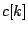
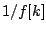
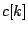
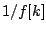
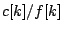

Example I05.compressor.pd (Figure 9.17) is another channel compander which is presented in preparation for Example I06.timbre.stamp.pd, which we will examine next. This is a realization of the timbre stamp of Figure 9.9, slightly modified.
There are two inputs, one at left to be filtered (and whose Fourier transform
is used for resynthesis after modifying the magnitudes), and one at right which
acts as a control source. Roughly speaking, if the two magnitudes
are  for the filter input and  for the control source, we just
``whiten" the filter input, multiplying by , and then stamp the control
magnitudes onto the result by further multiplying by . In practice, we
must limit the gain to some reasonable maximum value. In this patch this is
done by limiting the whitening factor to a specified maximum value
using the clip~ object. The limit is controlled by the
``squelch" parameter, which is squared and divided by 100 to map values
from 0 to 100 to a useful range.
for the filter input and  for the control source, we just
``whiten" the filter input, multiplying by , and then stamp the control
magnitudes onto the result by further multiplying by . In practice, we
must limit the gain to some reasonable maximum value. In this patch this is
done by limiting the whitening factor to a specified maximum value
using the clip~ object. The limit is controlled by the
``squelch" parameter, which is squared and divided by 100 to map values
from 0 to 100 to a useful range.
Another possible scheme is to limit the gain after forming the quotient
. The gain limitation may in either case be frequency dependent.
It is also sometimes useful to raise the gain to a power  between 0
and 1; if 1, this is a timbre stamp and if 0, it passes the filter input through
unchanged, and values in between give a smooth interpolation between the two.
between 0
and 1; if 1, this is a timbre stamp and if 0, it passes the filter input through
unchanged, and values in between give a smooth interpolation between the two.